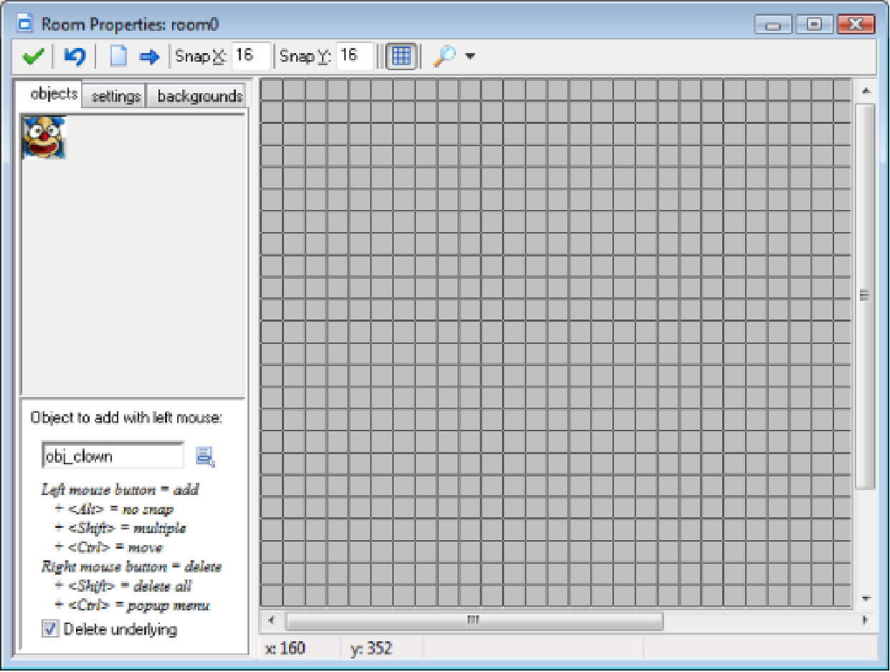
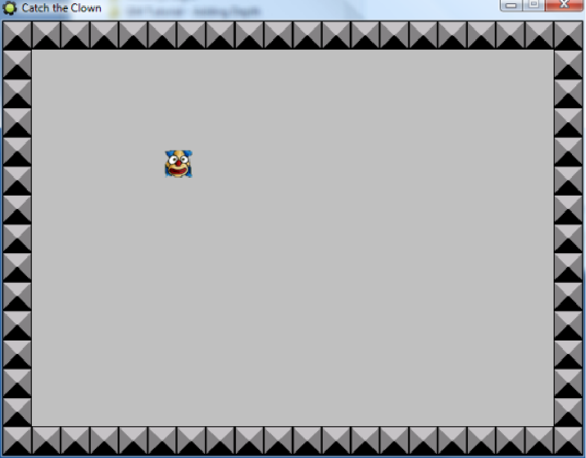

Now that we have created the game objects there is one more thing to do. We need to create the room in which the game takes place. For most games, designing effective rooms (often also called levels) is a time-consuming task because here we must find the right balance and progression in the game. But for Catch the Clown the room is very simple: a walled area with one instance of the clown object inside it.
1. From the Resources menu choose Create Room. The Room Properties form as shown in image below will show.

2. On the left you see three tabbed pages. Select the page labeled settings. In the Name field type
in rm_main. In the Caption for the room field type 'Catch the Clown'.
3. Select the objects tab. Enlarge the window somewhat such that you can see the complete room
area at the right. At the top, change the value for Snap X and Snap Y to 32. As the size of our
sprites is 32, this makes it easier to place the sprites at the correct locations.
4. At the left you see the image of the clown object. This is the currently selected object. Place one
instance of it in the room by clicking with the mouse somewhere in the centre of the grey area.
5. Click on the icon with the menu symbol next to the field obj_clown. Here you can select
which object to add. Select obj_wall. Click on the different cells bordering the room to put instances there. To speed this up, press and hold the <Shift> key on the keyboard and drag the
mouse with the mouse button pressed. You can remove instances using the right mouse button.
6. Press the button with the green V sign at the left top to close the form.
You might not have realized it but our game is ready now. The sprites and sounds have been added, the game objects have been designed and the first (and only) room in which the game takes place has been created. Now it is time to save the game and to test it
Saving the games works as in almost any other Windows program. Choose the command Save from the File menu, select a location and type in a name. Game Maker games get a file extension .gmk. Note that you cannot directly play such game files. You can only load them in Game Maker. Below we will see how to make stand-alone game executables

Next we need to test the game. Testing is crucial. You can test it yourself but you should also ask others to test it. Testing (or running the game in general) is simple; choose the command Run normally from the Run menu. The design window will disappear, the game will be loaded and, if you did not make any mistakes, the room will appear on the screen with the clown moving inside it, as in image above. Try clicking on it and see whether the game behaves as expected. You should hear the correct sounds and the speed of the clown should increase. To end the game, press the <Esc> key or click on the close button at the top right of the window. The design window will reappear.
Now it is time to fine tune the game. You should ask yourself for example the following questions: Is the initial speed correct? Is the increase in speed correct? Is the room size correct? Did we pick effective sprites and sounds for the game? If you are not happy, change these aspects in the game and test again. Remember that you should also let somebody else test the game. Because you designed the game it might be easier for you than for other people.